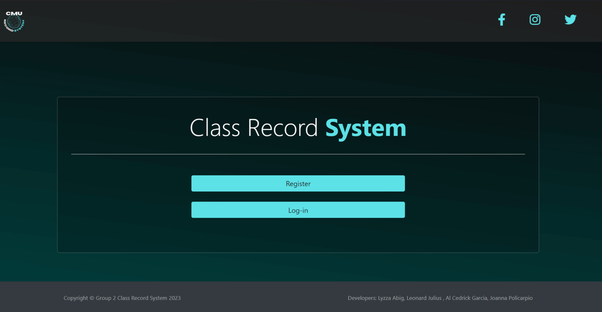
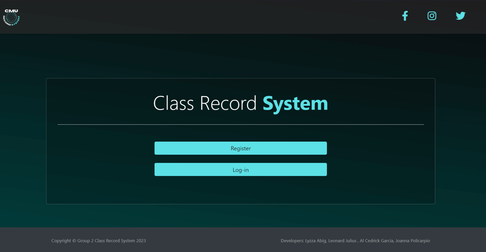

My name is Lyzza Rose Abig. I live in Bulacan, Philippines. I'm a fourth-year Bachelor of Science in Information Technology student. I am currently studying at Centro Escolar University in Malolos.
Being nurtured in a supportive setting has made me a competitive child with leadership talents and multi-discipline. I feel that rivalry exists solely between my past and present selves. Progress and challenges are something that I seek in every job I do.
Aside from coding, I am fascinated by the arts, traditional and digital. My artistic side helps me envision how my new website should look. I also found interest in poems and music.

 
